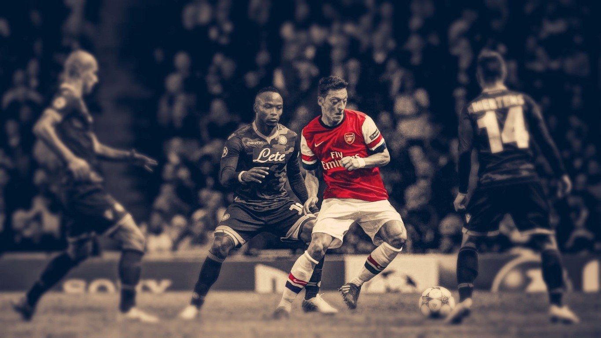
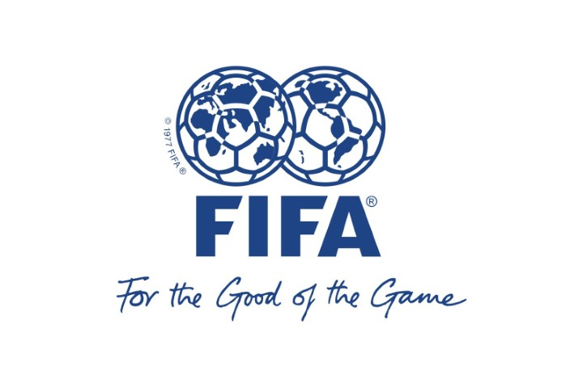
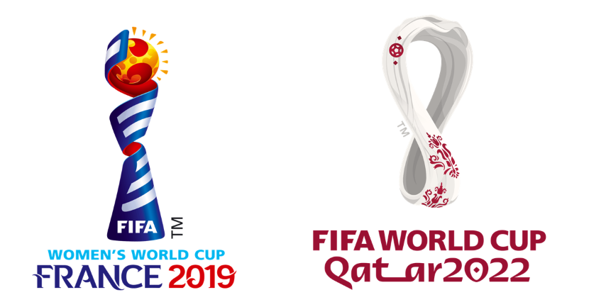
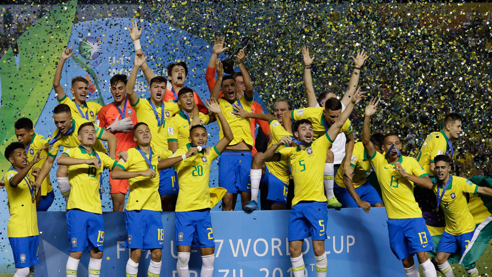
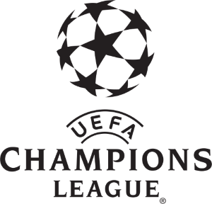
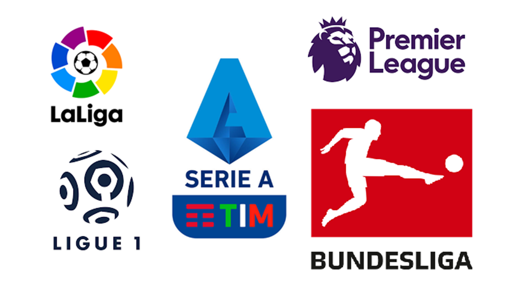

FOOTBALL AS A GAME
By Satyasadhan Banerjee

Football is a team sport played between two teams of 11 players. It is played by approximately 250 million players in over 200 countries and dependencies, making it the world's most popular sport. The game is played on a rectangular field called a pitch with a goal at each end.
Football is played in accordance with a set of rules known as the Laws of the Game. The ball is 68–70 cm (27–28 in) in circumference and known as the football.
Players are not allowed to touch the ball with their hands while it is in play, except for the goalkeepers within the penalty area. Other players mainly use
their feet to strike or pass the ball, but may also use any other part of their body except their arms.
The team that has scored more goals at the end of the game is the winner, if both teams have scored an equal number of
goals either a draw is declared or the game goes into extra time or a penalty shootout depending on the format of the competition. Each team is led by a
captain who has only one official responsibility as mandated by the Laws of the Game: to represent their team in the coin toss prior to kick-off or penalty kicks.

Football is governed internationally by the International Federation of Association Football (FIFA; French: Fédération Internationale de Football Association),
which organises World Cups for both men and women every four years. The men's FIFA World Cup has taken place every four years since 1930 with the exception of 1942
and 1946 tournaments, which were cancelled due to World War II. Approximately 190–200 national teams compete in qualifying tournaments within the scope of continental
confederations for a place in the finals. The finals tournament, which is held every four years, involves 32 national teams competing over a four-week period. It is
the most prestigious men's football tournament in the world as well as the most widely viewed and followed sporting event in the world, exceeding the Olympic Games.
Similarly, the FIFA Women's World Cup has been played every four years since 1991 though the sport has been played by women since it has existed. A record-breaking
1.12 billion viewers watched the 2019 FIFA Women's World Cup in France NEXT FIFA WORLD IS IN QATAR.

Brazil has been the most successful national team in the FIFA World Cup, being crowned winner five times: 1958, 1962, 1970, 1994 and 2002.

The most prestigious competitions in European club football are the UEFA Champions League and UEFA Women's Champions League which attract an extensive
television audience throughout the world.
The final of the men's tournament has been, in recent years, the most-watched annual sporting event in the world.

The top five European men's leagues are the Premier League (England), La Liga (Spain), Bundesliga (Germany), Serie A (Italy),
and Ligue 1 (France). Attracting most of the world's best players, each of the leagues has a total wage cost in excess of
£600 million/€763 million/US$1.185 billion.
